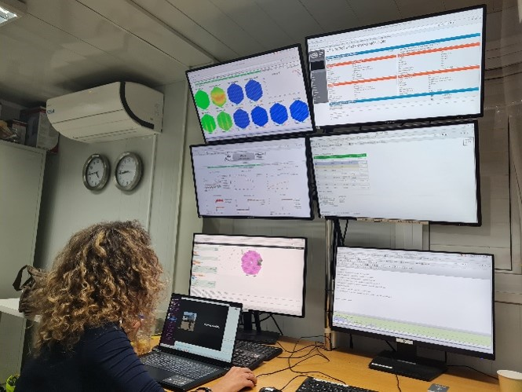

Salta al contenuto
Home
Attività di ricerca
Formazione
Canali Social
Pubblicazioni scientifiche
Didattica e Divulgazione
News e aggiornamenti
Tesi e Dottorato
IT
EN
News e aggiornamenti
Nuovi paper, bandi/progetti, collaborazioni e attività divulgative.
